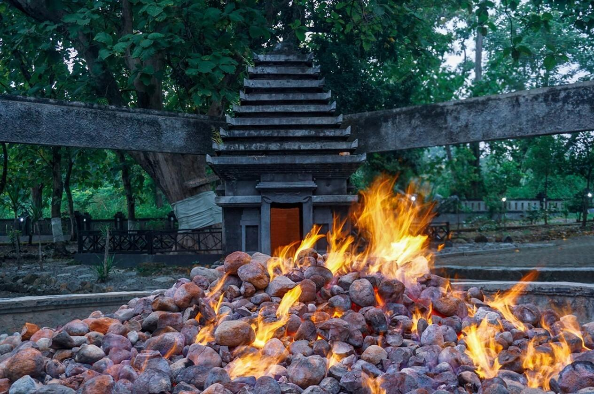
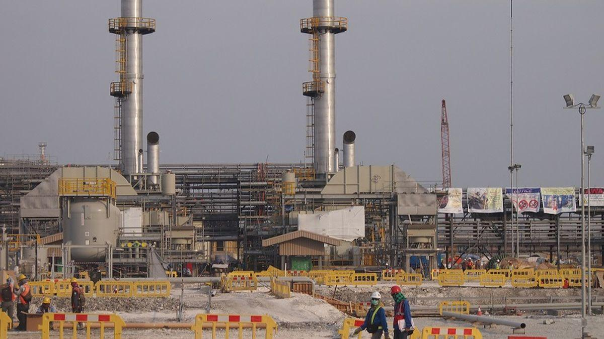
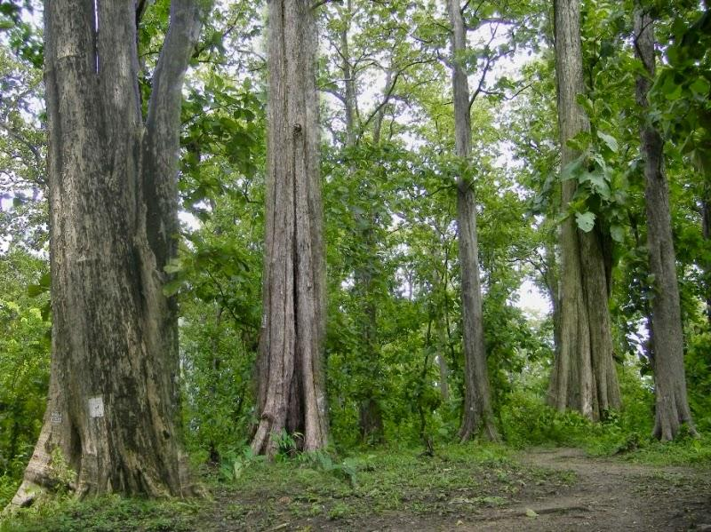
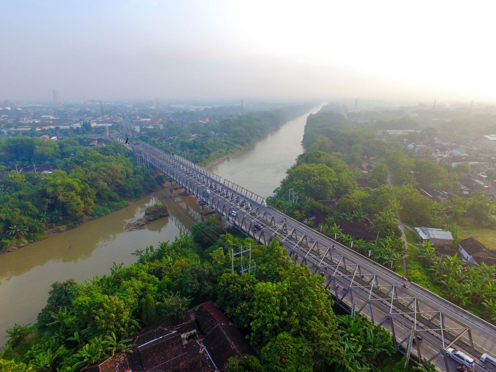

Kabupaten Bojonegoro merupakan daerah di Provinsi Jawa Timur yang memiliki berbagai potensi unggulan mulai dari budaya, wisata alam, hasil bumi, hingga kuliner tradisional yang masih terus dilestarikan masyarakat. Keunikan daerah ini menjadikan Bojonegoro memiliki identitas tersendiri yang membedakannya dengan daerah lain di Indonesia.
Ledre adalah makanan tradisional khas Bojonegoro yang dibuat dari pisang raja pilihan dengan bentuk tipis dan menggulung. Makanan ini terkenal karena aroma pisangnya yang harum dan rasa manis yang khas.
Ledre sering dijadikan buah tangan oleh wisatawan karena memiliki cita rasa unik dan tekstur renyah. Hingga saat ini ledre masih diproduksi secara tradisional oleh masyarakat Bojonegoro.

Kayangan Api merupakan salah satu wisata alam terkenal di Bojonegoro yang memiliki fenomena api abadi dari dalam tanah. Api tersebut terus menyala sepanjang waktu dan menjadi daya tarik wisatawan.
Tempat ini juga memiliki nilai sejarah karena dipercaya berkaitan dengan peninggalan kerajaan masa lampau. Suasana hutan jati di sekitar lokasi membuat tempat ini terasa sejuk dan alami.

Kabupaten Bojonegoro dikenal sebagai salah satu penghasil minyak bumi terbesar di Indonesia. Potensi migas tersebut memberikan pengaruh besar terhadap perkembangan ekonomi masyarakat.
Adanya industri migas membantu meningkatkan pembangunan daerah seperti jalan, fasilitas pendidikan, dan layanan umum lainnya. Hal ini membuat Bojonegoro dikenal sebagai daerah energi nasional.

Hutan jati di Bojonegoro terkenal luas dan menghasilkan kayu berkualitas tinggi. Kayu jati dari daerah ini banyak digunakan untuk membuat perabot rumah tangga dan kerajinan mebel.
Selain memiliki nilai ekonomi tinggi, keberadaan hutan jati juga membantu menjaga keseimbangan lingkungan dan menjadi sumber mata pencaharian masyarakat sekitar.

Sungai Bengawan Solo merupakan sungai terbesar di Pulau Jawa yang melintasi wilayah Bojonegoro. Sungai ini memiliki manfaat penting bagi kehidupan masyarakat.
Air Bengawan Solo dimanfaatkan untuk pertanian, irigasi, serta berbagai aktivitas ekonomi masyarakat sekitar. Sungai ini juga memiliki nilai budaya yang sangat melekat dalam kehidupan masyarakat Jawa.